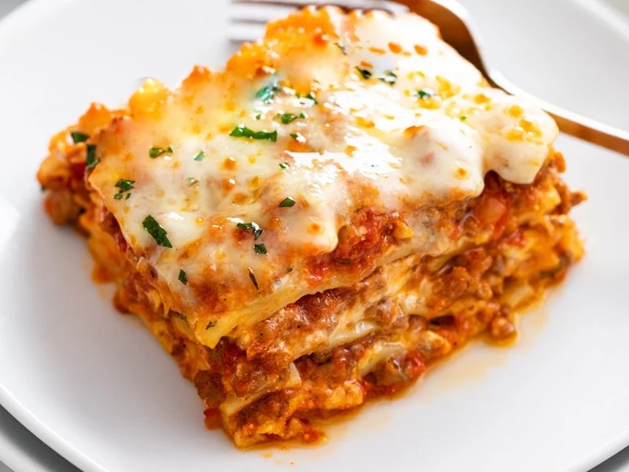

Lasagna

The Best Lasagna Recipe
This is one recipe my husband begs me to make. He is obsessed with this
lasagna and if he is stressed or overwhelmed with work, this is what I
make him. It is the perfect comfort food meal! There’s something so
amazing about homemade, made-from-scratch lasagna. Whenever he orders beef
lasagna at a restaurant, he ends up disappointed. This is such a warm,
comforting dinner and can feed a crowd (or at least a lot of hungry kids).
Ingredients
- 1 Tablespoon Olive Oil
- 1 small Onion (finely diced)
- 1 lb. Lean Ground Beef
- 3/4 teaspoon Garlic Powder (or 5 garlic cloves, finely minced)
- 3/4 teaspoon Salt
- 1/2 teaspoon Pepper
-
32-40 ounce jar Marinara Sauce (may use more depending on how "saucy"
you want it)
Steps
-
Preheat oven to 375 degrees. Heat olive oil in a large skillet over
medium heat. Add onion and cook for about 3-4 minutes. Add ground beef
and increase heat to medium-high. Cook until the meat begins to brown,
about 5 minutes. Sprinkle with garlic powder, salt, and pepper.
- Cook lasagna noodles according to package instructions.
-
Spread the bottom of a 9 x 13 baking pan with 1/4 cup of the meat sauce.
Place 3 noodles in a single layers on top of the sauce. Spread each
noodle with parmesan ricotta cheese filling and sprinkle with 1 cup of
mozzarella cheese and meat sauce. Repeat. Finish with remaining
mozzarella cheese.
-
Spray a large piece of foil with non-stick cooking spray and cover the
lasagna. Bake for 15 minutes and then remove the foil. Continue to bake
until the cheese if bubbling, about 25 minutes longer. Cool the lasagna
for 10 minutes before cutting into pieces.
Return to Main Page